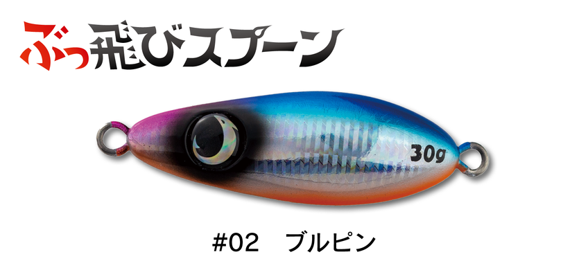
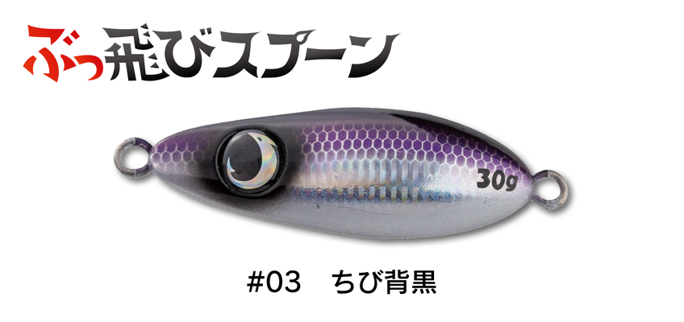
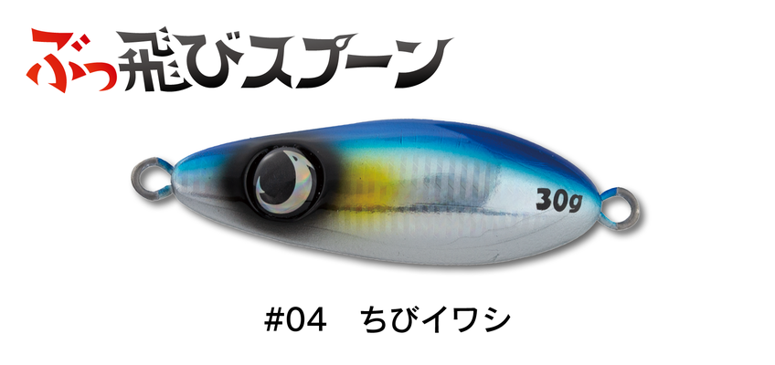
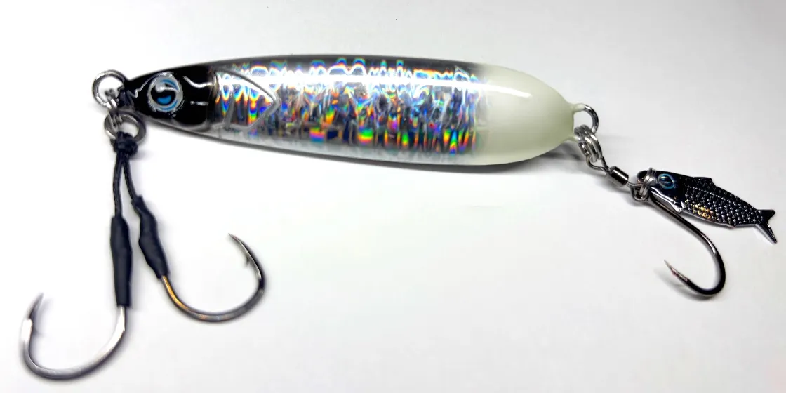

ぶっ飛びスプーン
ぶっ飛びスプーンはJUMPRIZE（ジャンプライズ）のジグミノーです。
スプーンの形をしていますが、正体はハイブリッドジグミノー。100m飛ぶ飛距離と、メタルジグとは比べものにならない食わせの能力で、スモールベイトの偏食や低活性の状況を打ち破れるのが最大の魅力です。

画像出典:JUMPRIZE公式HP
スペック
- メーカー
- JUMPRIZE（ジャンプライズ）
- タイプ
- ハイブリッドジグミノー（シンキング）
- 全長
- 53mm（30g）／56mm（38g）※アイを除く
- 重さ
- 30g／38g
- アクション
- ハイピッチワイドスイング
- レンジ
- 0〜10m（スキッピング対応可）
- 推奨フック
- トレブル #3〜#6／シングル ショアブループラグ 2/0・3/0
- 推奨リング
- ゴリラリング #3〜#4
- ターゲット
- シーバス・ヒラスズキ・ヒラメ・マゴチ・青物・カツオ・キハダマグロ
- 価格
- 1,254円（30g）／1,309円（38g）（税込）
▼今すぐチェック

ぶっ飛びスプーンの特徴
スプーンの形で100m飛ぶ、外洋フィールドのハイブリッドジグミノー
-
100m飛ぶ飛距離
スプーンのような形で空気抵抗を抑え、公式は100m飛ぶとしている。サーフや磯で、沖のポイントまで届かせたい時に頼りになる。
-
ハイピッチワイドスイングで食わせる
メタルジグとは比べものにならないレベルの食わせの能力をうたうアクション。スモールベイトの偏食や低活性で、ほかのルアーに反応しない時の一手になる。
-
貫通ワイヤーで大物にも対応
金型成型の貫通ワイヤー設計で強度も抜群。シーバスからマグロまで対応し、サーフ・磯・堤防からオフショアまで使える。
ぶっ飛びスプーンの使い方
基本はただ巻きで、ハイピッチなワイドスイングで誘います。
レンジは0〜10mと幅広いので、カウントダウンで狙う深さを決めてから巻き始めると組み立てやすくなります。水面を跳ねさせるスキッピングにも対応しています。
ぶっ飛びスプーンの得意な状況
サーフや磯、堤防から、ヒラメや青物、ヒラスズキを狙う場面が出番です。
小さなベイトばかり食べている時や、魚の活性が低くてメタルジグに反応しない時に試したい1本です。
遠くまで届いて食わせる力も強いので、沖の魚まで釣れるチャンスを広げられます。
ワンポイント
公式は、あと10m飛距離がほしい、時化の日で安定感がほしい、水深が少し深い時は38gを使うようにすすめています。38gも30gとほぼ同じ感覚で使えるので、状況に合わせて使い分けましょう。
ぶっ飛びスプーンの重さの使い分け
| 重さ | 全長／価格（税込） | 得意な場面 |
|---|---|---|
| 30g | 53mm／1,254円 | 基本の重さ。サーフや磯、堤防で幅広く |
| 38g | 56mm／1,309円 | もっと飛ばしたい時、時化の日、少し深い場所に |
どちらもカラーは全10色です。30gはアイシールが黒、38gは青になります。
人気カラー
ぶっ飛びスプーンの人気カラーを紹介します（画像は30g）。
 レンズキャンディー
レンズキャンディー
虹色のレンズが光る、アピール力のあるカラー。

ブルピン青物狙いの定番の配色。

ちび背黒背黒のベイトに合わせたナチュラルカラー。

ちびイワシ小さなイワシを食べている時に合わせやすいカラー。
画像出典:JUMPRIZE公式HP
▼今すぐチェック
ぶっ飛びスプーンに似ているルアー
-

スローマーク オンザブルー 詳細はこちら＞ブレードジグとスプーンを掛け合わせたスプーンジグ。ゆっくり巻いて見せる釣りに。
-
 ビッグバッカー Eブレード W
ジャッカル
詳細はこちら＞
ビッグバッカー Eブレード W
ジャッカル
詳細はこちら＞
ワイドアクションとブレードで寄せるブレードジグ。サーフで青物やヒラメを広く探る時に。
-
 飛び過ぎダニエル
ジャクソン
詳細はこちら＞
飛び過ぎダニエル
ジャクソン
詳細はこちら＞
飛距離を重視したメタルジグ。ヒラメ・マゴチ・シーバス・青物などを狙える。